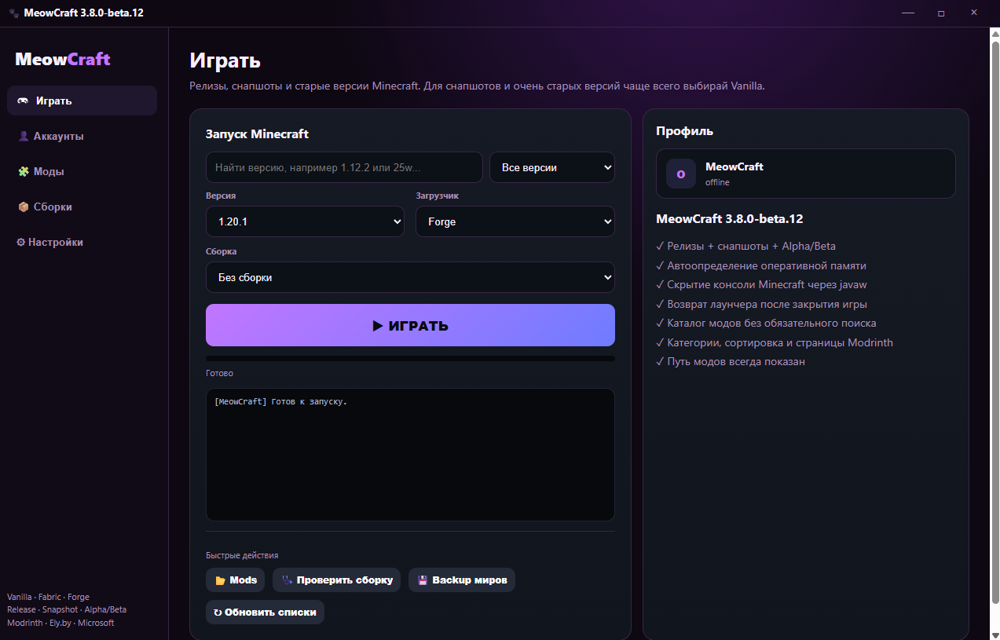
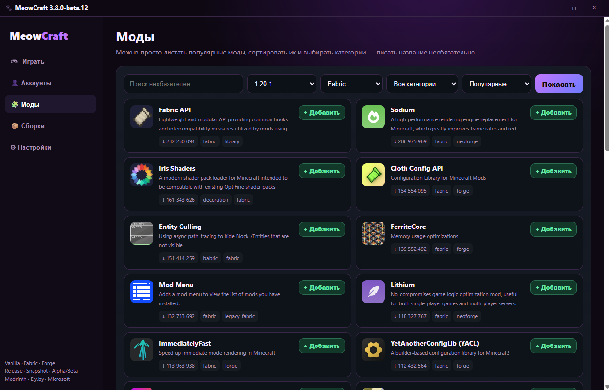
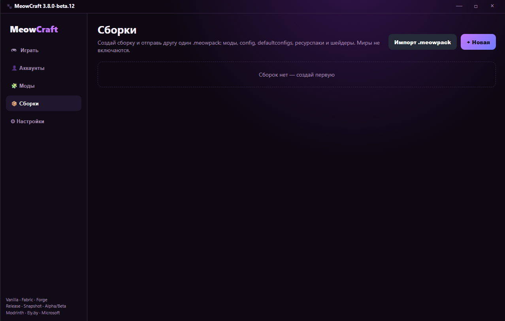
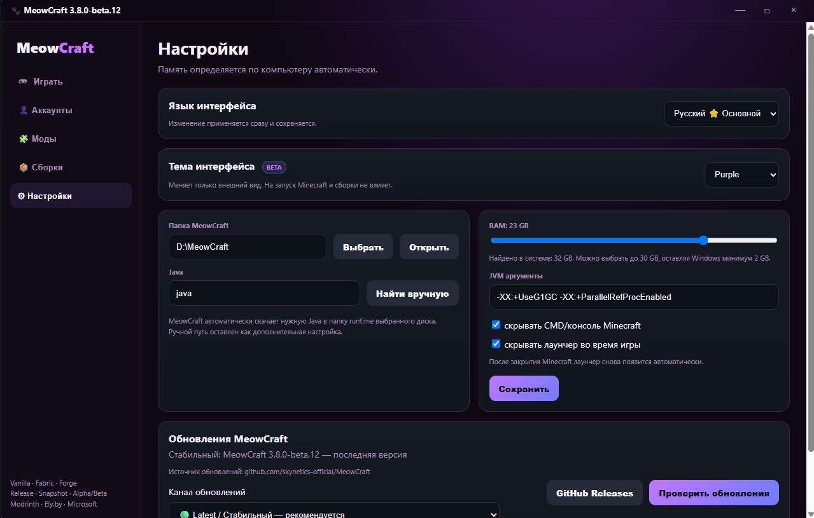

Minecraft без лишней возни.
Запуск Minecraft, аккаунты, Modrinth и сборки — в интерфейсе, который выглядит так же, как сам MeowCraft.

Stable отдельно, Beta отдельно
Экспериментальные функции не выдаются за стабильные. На сайте сразу видно, что уже готово, а что пока тестируется.
🎮 Minecraft
Релизы, снапшоты, Vanilla, Fabric и Forge с выбором сборки.
🧩 Modrinth
Поиск, категории и установка модов прямо из лаунчера.
👤 Аккаунты
Ely.by, Microsoft и локальный профиль.
🩺 Здоровье сборки
Проверка отсутствующих модов, дубликатов mod ID и очевидных конфликтов.
⬆ Обновления модов
Проверка совместимых версий Modrinth. Обновлять один мод или все — решает пользователь.
💾 Backup миров
Создание, список и восстановление резервных копий миров.
🎨 Темы
Экспериментальные темы интерфейса, не затрагивающие Minecraft.
📦 .meowpack
Моды, config, defaultconfigs, ресурспаки и shaderpacks в одном файле сборки.
Latest или Pre-release
Stable подходит большинству. Beta получает новые функции раньше, но может содержать ошибки.
MeowCraft Stable
- Основной канал
- Меньше экспериментальных функций
- Рекомендуется большинству
MeowCraft Beta
- Новые функции раньше
- Возможны баги
- Подходит для тестирования
Текущий Beta-интерфейс — Purple
Использованы новые скриншоты MeowCraft 3.8.0-beta.12 с темой Purple. Скрин с аккаунтами специально не показываю, чтобы не светить другие ники.



Всегда актуальная версия
Сайт сам читает GitHub Releases: обычный Release = Stable, Pre-release = Beta.
Коротко
Что выбрать — Stable или Beta?
Stable, если просто хочешь пользоваться лаунчером. Beta — если хочешь первым тестировать новые функции.
Где лежат официальные загрузки?
В GitHub Releases репозитория MeowCraft.
Почему нет скрина страницы аккаунтов?
Чтобы не показывать чужие или тестовые ники. На сайте оставлены только безопасные скриншоты.